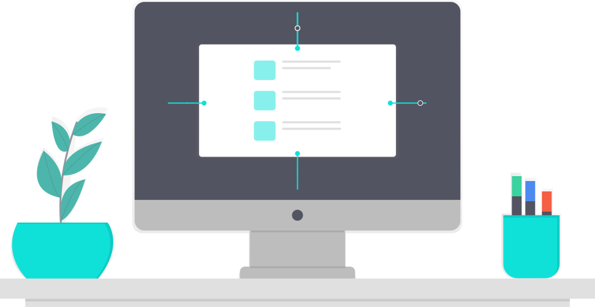
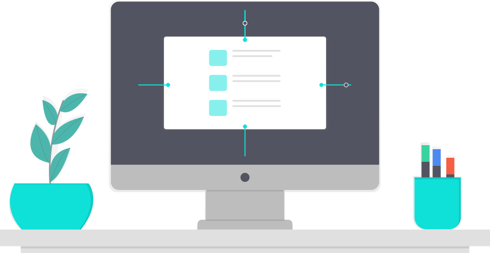
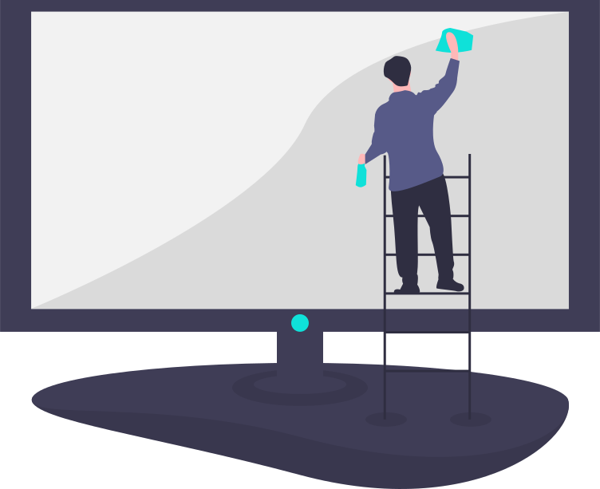
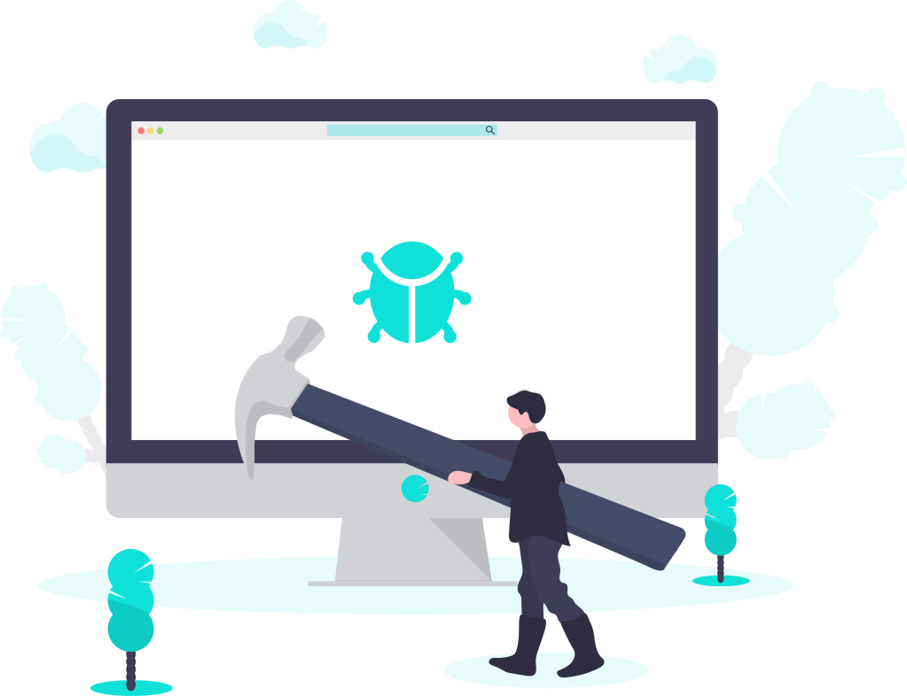

Restaurar Software
Reinstalación del sistema operativo, Linux, Windows y macOs.
Reinstalación del sistema operativo, Linux, Windows y macOs.
Mantenimiento preventivo, desfragamentación del disco duro (HDD), borrado de caché y programas sin usar, limpieza física y análisis de virus.
Diagnóstico para mejorar la velocidad de su equipo de computo, puede incluir o requerir de hardware.
Cambios de pantalla, teclado, disco duro, memoria RAM, antenas y otros dispositivos integrados.
Instalación de programas de todo tipo, desde antivirus hasta software avanzado.
No dudes en preguntarnos por cualquier otro inconveniente que tengas con tu equipo de cómputo.